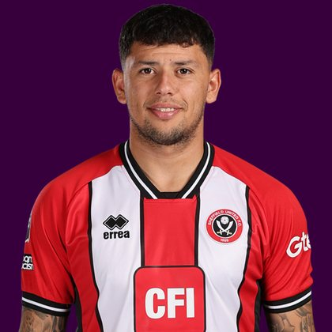

PITCHKEEP
Premier League ranks
Player File · MID COV · Premier #142

Gustavo Hamer
MID · Coventry City · age 29 · £5.2m
2025/26 Premier League
| Year | Starts | Min | G | A | xG | xA | CS | GC | Bonus | YC | Sleeper | FPL |
|---|---|---|---|---|---|---|---|---|---|---|---|---|
| 2025/26 | 0 | 71 | 0 | 0 | 0.0 | 0.26 | 0 | 2 | 0 | 0 | 1.0 | 7 |
Plus
- 1.0 Sleeper BPL 2025 points (Pitch #379).
- Corners order #5.
- Consensus 128.5 vs Sleeper #379 - the industry still believes more than 2025/26 counted.
Minus
- Board spread 123-379 (RotoWire Fantrax / Sleeper 400 to Sleeper BPL 2025).
PitchKeep Take · The Premier
Gustavo Hamer is a midfielder for Coventry City, age 29, £5.2m. The Premier ranks him 142nd overall by splitting Sleeper BPL 2025 (#379, 1.0 points) with the consensus of 2 other boards (128.5). The industry still has him 250 spots ahead of the 2025/26 Sleeper count. The Premier pays that reputation something, not everything. Brand does not outrun a down year, and a down year does not erase a player Coventry City still builds around.
The 2025/26 Premier League line is 0 starts and 71 minutes, 0 goals and 0 assists, 1 tackles and 0 CBI. Official FPL scored it at 7 points (1.0 per match). Sleeper's table turned the same counting stats into 1.0. Midfielders get 9 a goal, 6 an assist, and 1 a clean sheet, plus a full tackle/CBI stream. That is why a six who plays every week can outrank a ten-goal winger who sits.
Underlying: 0.0 xG, 0.26 xA, 0.26 xGI. Set pieces: corners order #5 for Coventry City. Role at Coventry City is the 2026/27 question sitting under the 2025/26 number. 0 starts is a starter. Anything under 25 starts is a rotation warning we already priced. Minutes are the skill that survives a finishing regression. The friendliest board is RotoWire Fantrax / Sleeper 400 at 123; the coldest is Sleeper BPL 2025 at 379.
Market: £5.2m, 6 boards on the file. Price is the FPL tax, not the rank. The Premier is who produced and who the boards still believe. FPL's own EP-next is 0.7. ICT 5.1.
Instruction: he is on the 400, which is already a statement, and he is not a star. Stash in Sleeper if the minutes are real. Do not let a Pitch screenshot make you start him over a Premier top-80. Nearby on The Premier: Dara O'Shea, Benjamin White, Lewis Hall. Versus The Pitch (Sleeper-only #379), the hybrid moves him up to #142. That move is the third list doing its job.
He is 29, which on this board is neither a dart nor a warning label. Prime-age midfielders get ranked on what they just did and whether Coventry City still gives them the ball. 71 minutes says yes. The 2026/27 FPL price (£5.2m) is the app's guess at whether that continues. The Premier is the blend of that guess and the box score.
How to use the file: The Pitch is the Sleeper-only 400 (he is #379 there). The Premier is the 50/50 with every other board we track. Attack, Midfield, Defence, and Keepers re-rank the same Sleeper table by position. BK Value on this page follows The Premier when you are on the hybrid calculator and The Pitch when you are on the Sleeper calculator. Same curve either way - 12,000 at 1.01.
Sleeper vs FPL
Same 2025/26 line, two scoring tables
Board graph
Spread 123-379 · 6 sources
Tape · 2025/26 Premier League
Gustavo Hamer Welcome back to Coventry City 2026 Skills
Every Board
Spread 123-379 · 6 sources
| Source | Rank |
|---|---|
| RotoWire Fantrax / Sleeper 400 | 123 |
| RotoWire FPL 400 | 134 |
| FPL Price Board | 225 |
| FPL xGI | 319 |
| FPL 2025/26 Points | 348 |
| Sleeper BPL 2025 | 379 |
All players · The Premier · The Pitch · PK News · Calculator